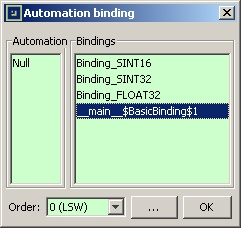

A ModbusPal project may require very specific bindings in order to mimic a real-world device. The approach of ModbusPal is to let the user create its own bindings thanks to scripts.
Before initparameter.
getClassName()function.
PythonBindingfrom the
modbuspal.scriptpackage.
PythonBinding.
getSize()and
getRegister()functions (the default implementations only return zeroes).
getSize()method returns, in bits, the total length of the formatted data created by the binding. For example, the built-in
SINT32binding returns 32.
getRegister()method returns a 16-bit unsigned integer value which depends on the data format of the binding and the specified order.
Then the new binding should be registered into the project, so that it can be used from the MODBUS Slave Editor of any slave in the current project:
ModbusPal.addBindingInstantiator()function.
from modbuspal.script import PythonBinding
class BasicBinding(PythonBinding):
# This binding uses a 32-bit signed integer formatting,
# then the size is 32 bits.
def getSize(self):
return 32;
# Override the getRegister() method so that it returns either
# the least or the most significant 16-bit word of the
# 32-bit integer.
def getRegister(self,rank,value):
# Cast value as an int
value_as_a_32bit_int = int(value);
# If rank is 0, extract the least significant 16-bit word
if rank==0:
value = value_as_a_32bit_int & 0xFFFF;
return value;
# If rank is 1, extract the most significant 16-bit word.
elif rank==1:
value = (value_as_a_32bit_int>>16) & 0xFFFF;
return value;
# It should never happen but, just in case,
# treat the higher ranks.
else:
# If the 32-bit value is positive, then higher 16-bit words are 0x0000
if value_as_a_32bit_int >= 0:
return 0x0000;
# If the 32-bit value is negative, then higher 16-bit words are 0xFFFF
else:
return 0xFFFF;
bb = BasicBinding();
ModbusPal.addBindingInstantiator(bb);
The above example will create a new binding with a rather strange name: 
This is because, by default, the binding is named after the Java classname. But in the case of a class created by a Python script, the resulting classname is cryptic.
To solve this problem, the binding must implement the getClassName()
function in order to return a better name.
It is highly recommanded to implement the getClassName()
function.
from modbuspal.script import PythonBinding
class DummyBinding(PythonBinding):
def getClassName(self):
return "DummyBinding";
db = DummyBinding();
ModbusPal.addBindingInstantiator(bd);
Some bindings will require to initialize variables when they
are instanciated. Normally, this would be done in the constructor
of the Python class, the __init__()
function.
But, due to the way ModbusPal operates, the constructor is not always
called. So, in order to initialize the internal variables of the binding,
the user should implement the init()
function instead.
All initializations that are required by the binding should be made
into the init()
function. The following sample of code illustrates
how:
class DummyBinding(PythonBinding):
def init(self):
self.myVar = 5;
A binding can be used to associate an automation to coils. In that
case, ModbusPal will call the getCoil()
function of the binding
instead of calling getRegister()
.
The getCoil()
function can be overridden, but in most cases
its default implementation should suffice.
The default implementation of getCoil()
is as follow:
getRegister()method is used to retrieve it.
Please consult the Javadoc of ModbusPal in order to get more information on all the classes introduced in this page.
The following example is real-case binding script. The manufacturer of some MODBUS device provides the following description of the “date/time” registers:
| Register | High byte | Low byte |
|---|---|---|
| 24 | Minute | Second |
| 25 | Day | Hour |
| 26 | Year | Month |
One of the possible strategies to simulate this behavior is:
The binding will have a size of 3*16 = 48 bits, and the getRegister()
method will behave as follow
from modbuspal.script import PythonBinding
from java.util import Calendar
class AdvancedBinding(PythonBinding):
def getClassName(self):
return "AdvancedBinding";
def getSize(self):
return 3*16;
# Assuming that the provided "value" is a Unix timestamp (32-bit integer
# value representing the number of seconds since 1st January 1970),
# this binding will transfom that timestamp to the following formatting:
# - register #0 will contain minutes in the high byte, and seconds in the low byte
# - register #1 will contain days in the high byte, and hours in the low byte
# - register #2 will contain years in the high byte, and months in the low byte
def getRegister(self,rank,value):
unix_timestamp = long(value);
cal = Calendar.getInstance();
cal.setTimeInMillis( unix_timestamp * 1000 );
if rank==0 :
second = cal.get( Calendar.SECOND );
minute = cal.get( Calendar.MINUTE );
return minute * 256 + second;
elif rank==1 :
hour = cal.get( Calendar.HOUR_OF_DAY );
day = cal.get( Calendar.DAY_OF_MONTH ) ;
return day * 256 + hour;
elif rank==2 :
month = cal.get( Calendar.MONTH ) ;
year = cal.get( Calendar.YEAR) % 100;
return year * 256 + month;
else:
return 0;
ab = AdvancedBinding();
ModbusPal.addBindingInstantiator(ab);